第四章 基本平面图形·培优卷
【北师大版2024】
参考答案与试题解析
一、选择题（本大题共10小题，每小题3分，满分30分）
1．（25-26六年级上·黑龙江大庆·阶段练习）下列说法错误的是（ ）
A．圆内最长的线段是直径
B．圆的周长是直径的π倍
C．半径2厘米的圆的圆周率比直径3厘米的圆的圆周率大
D．用同一根绳子围成长方形、正方形和圆形，圆的面积最大
【答案】C
【分析】本题考查圆的相关概念（直径、周长、圆周率）以及周长相等的长方形、正方形、圆的面积比较，解题的关键是明确圆周率的定义以及不同图形面积与周长的关系．
依次分析每个选项，根据圆的相关知识和不同图形面积规律判断对错．
【详解】解：A、在圆中，直径是通过圆心并且两端都在圆上的线段，圆内的线段中，直径是最长的，该说法正确，不符合题意；
B、根据圆的周长公式C=πd（C表示周长，d表示直径），可知圆的周长是直径的π倍，该说法正确，不符合题意；
C、圆周率是一个固定的值，用π表示，它与圆的半径．直径大小无关，所以不管圆的半径或直径是多少，圆周率都是一样的，该说法错误，符合题意；
D、用同一根绳子围成长方形．正方形和圆形，即它们的周长相等．在周长相等的情况下，圆的面积最大，该说法正确，不符合题意．
故选：C．
2．如图，M是线段AB的中点，N是线段BM上一点，下列各式可以表示MN的长度的是（ ）
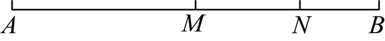
A．AB−BN B．12AN−AM C．AN−BM D．12BM
【答案】C
【分析】本题考查了与线段中点有关的计算，根据线段中点的定义和线段的和差倍分关系逐项判断即可求解．
【详解】解：由图可知，AB−BN=AN，故A选项不合题意；
因为AN−AM=MN，所以12AN−AM≠MN，故B选项不合题意；
因为M 是线段AB的中点，
所以AM=BM ，
所以AN−BM=AN−AM=MN ，故C选项符合题意；
因为点N不一定是线段BM的中点，所以D选项不合题意．
故选：C.
3．（24-25七年级上·江苏徐州·期末）已知某正八边形的一边长为2，则该正八边形的周长为（ ）
A．12 B．15 C．16 D．18
【答案】C
【分析】此题主要考查正多边形的性质．根据正八边形的八条边长相等即可得出正八边形的周长．
【详解】解：正八边形八条边长相等，2×8=16，
故选：C．
4．（25-26六年级上·黑龙江绥化·期中）一架飞机向东偏北45°方向飞行，接到指令后，改向相反的方向飞行，那么这架飞机向（ ）方向飞行．
A．东偏南45° B．西偏南45° C．西偏北45°
【答案】B
【分析】本题主要考查方向角的辨别，注意方向的相对性，相反方向即方向角增加180°，东偏北45°的相反方向为西偏南45°．
【详解】解：∵飞机原飞行方向为东偏北45°，
∴相反方向为原方向旋转180°，
∵东的相反方向为西，北的相反方向为南，
∴东偏北45°的相反方向为西偏南45°．
故选：B．
5．如图，建筑工人在砌墙时，经常用细线绳在墙的两端之间拉一条直的参照线，这样做的依据是（ ）
A．两点之间，线段最短 B．两点确定一条直线
C．两点间距离的概念 D．以上都不是
【答案】B
【分析】由两点确定一条直线可直接得出答案．
此题主要考查了两点确定一条直线，理解题意是解题关键．
【详解】解：建筑工人砌墙时，经常用细绳在墙的两端之间拉一条参照线，这样做蕴含的数学原理是：两点确定一条直线．
故选：B．
6．（24-25七年级上·山西太原·阶段练习）下列四个图中，能用∠1，∠AOB，∠O三种方法表示同一个角的是（ ）
A．B． C．
C． D．
D．
【答案】B
【分析】本题考查了角的表示方法，根据角的表示方法并结合图形，逐项分析即可得解，熟练掌握角的表示方法是解此题的关键．
【详解】解：A、∠1和∠AOB表示同一个角，∠O表示不同的角，故不符合题意；
B、∠1，∠AOB，∠O三种方法表示的都是同一个角，故符合题意；
C、∠AOB和∠O表示同一个角，∠1表示不同的角，故不符合题意；
D、∠AOB和∠1表示不同的角，故不符合题意；
故选：B．
7．（25-26七年级上·全国·期末）如图，C是线段AB上一点，D，E分别是线段AC，BC的中点，若AB=16，AD:BE=3:1，则BE的长为（ ）

A．4 B．3 C．2 D．32
【答案】C
【分析】本题考查了线段的和差，以及线段中点的特点，根据D，E分别是线段AC，BC的中点，推出AD+BE=8，再结合AD:BE=3:1求解，即可解题．
【详解】解：因为D，E分别是线段AC，BC的中点，
所以AD=DC，CE=EB，
所以 AD+BE=12AB=12×16=8，
又因为AD:BE=3:1，
所以 BE=8×14=2，
故选：C．
8．如图1，图2所示，把一副三角板先后放在∠AOB上，则∠AOB的度数可能（ ）
A．60° B．50° C．40° D．30°
【答案】C
【分析】本题考查了三角板的特点，正确得出∠AOB的取值范围是解题的关键．根据三角板的特点可得30°<∠AOB<45°，结合选项即得答案．
【详解】解：根据题意，可知30°<∠AOB<45°，
所以选项A、B、D不符合题意，选项C符合题意．
故选：C．
9．如图，点P在线段AB的延长线上，BP=64，记线段AP和AB的中点分别为P1，B1；线段AP1和AB1的中点分别为P2，B2；线段AP2和AB2的中点分别为P3和B3；⋯，依次进行这样的标记，则B1P1+B2P2+B3P3+B4P4+B5P5+B6P6=（ ）
A．62 B．63 C．64 D．65
【答案】B
【分析】本题考查了线段的和差，中点的性质，根据图形，找到线段之间的关系，即可求解，根据图形找到线段之间的关系是解题的关键．
【详解】解：由题意可得，B1P1=12AP−12AB=12AP−AB=12BP，
B2P2=12AP1−12AB1=12×12B1P1=14BP，
B3P3=12AP2−12AB2=12B2P2=18BP，
B4P4=12AP3−12AB3=12B3P3=116BP，
B5P5=12AP4−12AB4=12B4P4=132BP，
B6P6=12AP5−12AB5=12B5P5=164BP，
∴B1P1+B2P2+B3P3+B4P4+B5P5+B6P6
=12BP+14BP+18BP+116BP+132BP+164BP，
=12+14+18+116+132+164BP，
=6364×64，
=63，
故选：B．
10．如图，按照上北下南，左西右东的规定画出方向十字线，∠AOE＝m°，∠EOF＝90°，OM、ON分别平分∠AOE和∠BOF，下面说法：
①点E位于点O的北偏西m°；②图中互余的角有4对；③若∠BOF＝4∠AOE，则∠DON＝54°；④若∠MON∠AOE+∠BOF=n，则n的倒数是23，其中正确的有（ ）
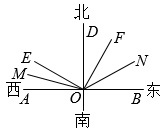
A．3个 B．2个 C．1个 D．0个
【答案】B
【分析】根据方位角的定义，以及角平分线的定义，分别求出所需角的度数，然后分别进行判断，即可得到答案．
【详解】解：∵∠AOE＝m°，
∴∠EOD=90°−m°，
∴点E位于点O的北偏西90°−m°；故①错误；
∵∠EOF＝90°，
∴∠EOD+∠DOF＝90°，∠AOE+∠BOF=90°，
∵∠AOD=∠BOD=90°，
∴∠AOE+∠EOD=90°，∠DOF+∠FOB=90°，
∠AOM+∠MOD=90°，∠BON+∠DON=90°，
∵OM、ON分别平分∠AOE和∠BOF，
∴∠AOM=∠EOM，∠BON=∠FON，
∴∠EOM+∠MOD=90°，∠FON+∠DON=90°，
∴图中互余的角共有8对，故②错误；
∵∠BOF＝4∠AOE，∠AOE+∠BOF=90°，
∴∠BOF=72°，
∴∠BON=36°，
∴∠DON=90°−36°=54°；故③正确；
∵∠AOE+∠BOF=90°，
∴∠MOE+∠NOF=12(∠AOE+∠BOF)=12×90°=45°，
∴∠MON=90°+45°=135°，
∴∠MON∠AOE+∠BOF=135°90°=32=n，
∴n的倒数是23，故④正确；
∴正确的选项有③④，共2个；
故选：B．
【点睛】本题考查了角平分线的定义，余角的定义，方位角的表示，以及角度的和差关系，解题的关键是熟练掌握题意，正确找出图中角的关系进行判断．
二、填空题（本大题共6小题，每小题3分，满分18分）
11．（24-25七年级上·江苏泰州·期末）弯曲的公路改直后就能缩短路程，可以用数学知识的基本事实来解释为 ．
【答案】两点之间，线段最短
【分析】本题主要考查了线段的性质，熟练掌握线段的性质是解题的关键；
根据线段的性质：两点之间线段最短，解答即可；
【详解】解：由线段的性质可知：两点的所有连线中，可以有无数种连法，如折线、曲线、线段等，这些所有的线中，线段最短，
故答案为：两点之间，线段最短．
12．若一个多边形截去一个角后，得到的新多边形为十五边形，则原来的多边形边数为 ．
【答案】14或15或16
【分析】分三种情况进行讨论，得出答案即可．
【详解】解：如图，一个多边形减去一个角后，比原来多边形少了一条边，
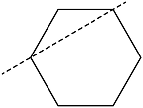
∴此时原多边形的边数为15+1=16；
如图，一个多边形减去一个角后，与原来多边形的边数相同，
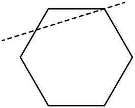
∴此时原多边形的边数为15；
如图，一个多边形减去一个角后，比原来多边形多了一条边，
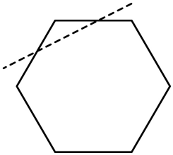
∴此时原多边形的边数为15−1=14；
综上分析可知，原来的多边形边数为14或15或16．
故答案为：14或15或16．
【点睛】本题主要考查了多边形的边数问题，解题的关键是数形结合，注意进行分类讨论．
13．上午10时30分，时针与分针成
【答案】135°/135度
【分析】本题考查了钟面时针与分针的夹角问题，根据时针一小时转30°，时针每分钟转0.5°，进行求解即可．
【详解】解：6时与10时之间的夹角为30°×4=120°，
分针走30分钟，时针转的度数为：0.5°×30=15°，
上午10时30分，时针与分针成的度数为：
120°+15°=135°，
故答案为：135°．
14．（24-25七年级上·重庆巴南·期末）如图，直线上有A、B、M、N、Q五点，点M是线段AB的三等分点，点N是线段AB的中点，点Q是线段AB延长线上一点，且AQ=2AB−MQ，则NQBQ的值为 ．

【答案】4
【分析】本题考查两点间的距离，掌握线段的和、差、倍、比的关系以及线段中点的定义是正确解答的关键．根据线段的和、差、倍、比的关系以及线段中点的定义用含有参数a的代数式表示NQ,BQ算即可．
【详解】解：设AB=6a，
∵点M是线段AB的三等分点，点N是线段AB的中点，
∴AM=13AB=2a， BM=23AB=4a，AN=BN=12AB=3a，
∵AQ=2AB−MQ，即AB+BQ=2AB−MB−BQ，
∴6a+BQ=12a−4a−BQ，
∴BQ=a，
∴NQ=NB+BQ=3a+a=4a，
∴NQBQ=4aa=4，
故答案为：4．
15．（2025七年级上·全国·专题练习）如图所示，把一个圆沿着半径剪开，再拼成一个近似的长方形．这个近似长方形的周长比原来圆的周长增加了6厘米，这个圆的半径是 厘米，这个圆的面积是 平方厘米．

【答案】 3 28.26
【分析】本题主要考查了圆的面积的推导，根据拼成后的长方形的周长比圆的周长增加了圆半径的2倍求出圆的半径是解题的关键．
根据拼成后的长方形的周长比圆的周长增加了圆半径的2倍求出圆的半径，直接运用圆的面积公式求解即可．
【详解】解：6÷2=3（厘米）
3.14×32=3.14×9=28.26（平方厘米）
这个圆的半径是3厘米，这个圆的面积是28.26平方厘米．
故答案为：3，28.26．
16．（24-25七年级上·重庆·期末）如图，已知∠AOB=102∘，∠COD=30∘，∠COD在∠AOB的内部绕点O任意旋转，若OE平分∠BOC，则2∠AOE+∠BOD的值为 ．
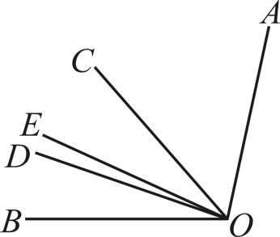
【答案】174°
【分析】考查角平分线的意义，利用代数的方法解决几何的问题也是常用的方法，有时则会更简捷.
根据角平分线的意义，设∠DOE=x°，根据∠AOB=102∘，∠COD=30∘，分别表示出图中的各个角，然后再计算2∠AOE+∠BOD的值即可.
【详解】如图：∵OE平分∠BOC，
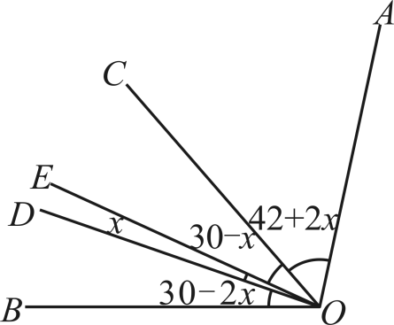
∴∠DOE＝∠COE，
设∠DOE=x°
∵∠COD=30∘，
∴∠COE=30°−x°，∠BOD==30°−2x°
∴∠AOC=∠AOB−∠BOD−∠DOE−∠COE=42°+2x°
∠AOE=∠AOC+∠COE=72°+x°
2∠AOE+∠BOD=2×（72°+x°）+30°−2x°=174°
则2∠AOE+∠BOD的值174°
故答案为：174°．
三、解答题（本大题共8小题，满分72分）
17．（6分）（25-26七年级上·全国·课后作业）计算：
(1)48°39′+67°31′；
(2)125°12′−21°46′；
(3)90°−48°35′；
(4)20°17′×5．
【答案】(1)116°10′
(2)103°26′
(3)41°25′
(4)101°25′
【分析】本题考查了度分秒的换算：1度=60分，即1°=60′，1分=60秒，即1′=60″．
（1）先分别进行度、分的加法运算，然后利用60进位制转化；
（2）先把125°12′化为124°72′，再分别进行度、分的减法运算；
（3）先把90°化为89°60′，再分别进行度、分的减法运算；
（4）原式进行乘法运算即可．
【详解】（1）解：48°39′+67°31′
=115°70′
=116°10′；
（2）解：125°12′−21°46′
=124°72′−21°46′
=103°26′；
（3）解：90°−48°35′
=89°60′−48°35′
=41°25′；
（4）解：20°17′×5
=100°85′
=101°25′．
18．（6分）如图，平面上有A、B、C、D四个点，根据下列语句画出图形：
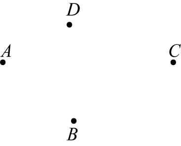
(1)连接AC、BD；
(2)用尺规在线段AC上作一条线段CF，使得CF=AC−BD．（不写作法，保留作图痕迹）
【答案】(1)见解析
(2)见解析
【分析】本题主要考查线段作图，理解题意，掌握线段的作图方法是关键．
（1）根据题意，连接线段即可；
（2）根据线段和差计算方法作图即可．
【详解】（1）解：如图所示，线段AC、BD即为所求图形；
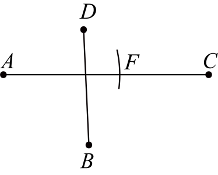
（2）解：如图所示，以点A为圆心，以BD为半径画弧，交AC于点F，得AF=BD，
∴CF=AC−AF=AC−BD．
19．（8分）（24-25七年级上·湖北武汉·期末）如图，延长线段AB到点C，使BC=12AB，点D为AC的中点．
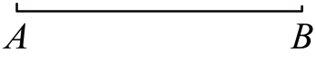
(1)若AB=8，请补齐图形并求线段BD的长；
(2)若F为BC的三等分点，则BFAD的值为 ．（直接写出结果）
【答案】(1)图见解析，BD=2
(2)49或29
【分析】本题考查了线段中点，线段和差运算等知识，结合图形理清线段间的关系，并分类讨论是解题的关键．
（1）依题意即可补齐图形；由BC=12AB可求得AC的长；由点D为AC的中点，求得DC的长，再由BD=DC−BC即可求解；
（2）分两种情况：F点为靠近点C的三等分点；F点为靠近点B的三等分点；利用线段间的关系即可求解．
【详解】（1）解：补齐图形如下：
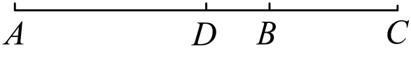
因为AB=8，BC=12AB，
所以BC=12AB=4，
所以AC=AB+BC=12；
因为点D为AC的中点，
所以DC=12AC=6，
所以BD=DC−BC=6−4=2；
（2）解：当F点为靠近点C的三等分点时，如图，
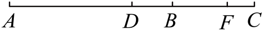
则BF=23BC；
因为点D为AC的中点，BC=12AB，
所以AD=12AC=12(AB+BC)=32BC，
所以BFAD=23BC÷32BC=49；
当F点为靠近点B的三等分点时，如图，
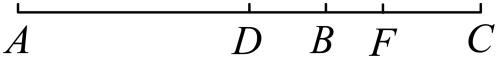
则BF=13BC；
因为点D为AC的中点，BC=12AB，
所以AD=12AC=12(AB+BC)=32BC，
所以BFAD=13BC÷32BC=29；
综上，BFAD=49或29；
故答案为：49或29．
20．（8分）如图∠AOB:∠BOC=1:4，OM平分∠AOB，∠BON：∠NOC=3:1，若∠MON=91°，
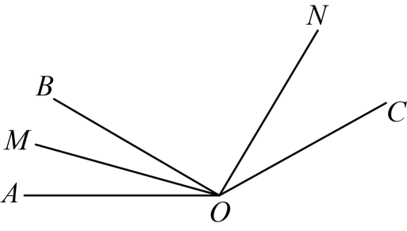
(1)∠AOB ∠NOC（填“＞”或“＜”或“=”）；
(2)求∠AOC 的度数．
【答案】(1)=
(2)130°
【分析】（1）利用条件中的角的比例关系设出各个角的大小，即可比较；
（2）利用∠MON=91°建立方程求解即可．
【详解】（1）∵∠AOB:∠BOC=1:4
∴设∠AOB=2x，∠BOC=8x，
∵OM平分∠AOB，∠BON：∠NOC=3:1，
∴∠AOM=∠BOM=x，∠BON=6x，∠NOC=2x，
∴∠AOB=∠NOC=2x，
故答案为：=．
（2）∵∠MON=91°
∴∠NOM=∠BOM+∠BON=7x=91°，
∴x=13°，
∴∠AOC=∠AOB+∠BOC=2x+8x=10x=130°
∴∠AOC 的度数为130°．
【点睛】本题考查了角的比较与运算，解题关键是正确运用角的关系进行转化，并利用已知角建立方程求解．
21．（10分）如图1，点C在线段AB上，BC=2AC．P，Q两点同时从点C，B出发，分别以1cms，2cms的速度沿直线AB向左运动，当点P达点A时，两点立即停止运动．

（1）APCQ的值是______；
（2）取PQ中点M，CQ的中点N．求MNQB的值．
【答案】（1）12；（2）MNQB=14
【分析】（1）分别表示出AP，CQ，故可求解；
（2）根据中点的性质表示出MN，再根据线段的关系得到PC=12QB，故可得到MN=14QB，即可求解．
【详解】解：（1）∵P，Q两点同时从点C，B出发，分别以1cms，2cms的速度沿直线AB向左运动，
设运动时间为t
∴CP=t，BQ=2t
∴PC=12QB
∵BC=2AC
∴设BC=2a，AC=a
∴AP=AC-CP=a-t，CQ=BC-BQ=2a-2t=2（a-t）
∴AP=12CQ
∴APCQ=12
故答案为：12；
（2）如图，∵M是PQ中点，N是CQ的中点
∴MQ=12PQ，NQ=12CQ
∴MN=MQ−NQ=12PQ−12CQ=12PQ−CQ=12PC，
∵PC=12QB，
∴MN=12×12QB=14QB，
∴MNQB=14．
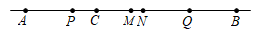
【点睛】本题考查线段的和差问题，解题的关键是根据中点的性质表示出线段的长．
22．（10分）（25-26九年级上·广东东莞·期中）探究归纳题：

【试验分析】
（1）如图①，过点A可以作1条对角线；同样，经过点B可以作1条对角线；经过点C可以作1条对角线；经过点D可以作1条对角线；且对角线AC与CA为同一条．通过以上分析和总结，图①共有________条对角线；
【拓展延伸】
（2）运用（1）的分析方法可得：图②每个顶点出发有________条对角线，共有________条对角线；图③共有________条对角线；
【探索归纳】
（3）对于n边形n>3，共有________条对角线（用含n的代数式表示）；
【特例验证】
（4）十边形共有________条对角线．
【答案】（1）2；（2）2，5，9；（3）nn−32；（4）35．
【分析】本题考查了多边形的对角线，发现多边形对角线公式nn−32是解题关键．
（1）根据对角线的定义，可得答案；
（2）根据对角线的定义，可得答案；
（3）根据探索，可发现规律；
（4）根据对角线的公式，可得答案．
【详解】解：（1）四边形有4个顶点，每个顶点可作1条对角线（不能与自身、相邻两个顶点连线）；
由于每条对角线被两个顶点各计算一次，因此总对角线数为4×12=2条；
（2）过五边形每个顶点可作5−3=2条对角线，共有5个顶点，总对角线数为5×22=5条；
过六边形每个顶点可作6−3=3条对角线，共有6个顶点，总对角线数为6×32=9条；
（3）对于n边形，每个顶点可作n−3条对角线（不能与自身、相邻两个顶点连线），总顶点数为n；
由于每条对角线被两个顶点重复计算，因此总对角线数为：nn−32；
（4）将n=10代入nn−32计算，得10×10−32=10×72=35，
故十边形共有35条对角线．
23．（12分）（24-25七年级上·全国·期末）如图，甲乙两船从B港口同时出发反向而行，甲船顺水，乙船逆水，两船在静水中速度都是50km/h，水流速度为akm/h，5h后两船同时到达A、C两港口，卸装货物后，又同时出发，甲船驶往C港口，乙船驶往A港口．
(1)A、C两港口相距多远？
(2)AB港口间比BC港口间多多少千米？ （用含a的代数式表示）
(3)卸装货物后同时出发，两船又经过多少小时相遇？ 若相遇处距B港口 50千米，求甲船还需几h到达C港口？
【答案】(1)500km
(2)10akm
(3)两船又经过5h相遇，甲船还需559h到达C港口
【分析】本题考查顺水、逆水速度，代数式求值，线段的和差，一元一次方程的实际应用；解决题目的关键是找到等量关系；
（1）先表示出在航行过程中顺水速度为50+akm/h，逆水速度为50−akm/h，
继而求出B港口到A港口的距离，B港口到C港口的距离，列式化简即可；
（2）求出AB=250+5akm,BC=250−5akm，列式化简即可解答；
（3）设卸装货物后同时出发，经过th相遇，列出一元一次方程， 50+at+50−at=500，求出t=5，由相遇处距B港口50千米，列出一元一次方程250+5a−250−5a=50，解得a=5，则甲船到达C港口还需要的时间为275÷50−5=559h，即可解答．
【详解】（1）解：由题可知，在航行过程中顺水速度为50+akm/h，逆水速度为50−akm/h，
甲船顺水航行5h从B港口到达A港口，
得B港口到A港口的距离AB=5×50+a=250+5akm，
乙船逆水航行5h从B港口到C港口，
得B港口到C港口的距离BC=5×50−a=250−5akm，
则A、C两港口相距250+5a+250−5a=500km；
答：A、C两港口相距500km；
（2）由（1）得AB=250+5akm,BC=250−5akm，
∴AB−BC=250+5a−250−5a=10akm，
答：AB港口比BC港口多10akm；
（3）设卸装货物后同时出发，经过th相遇，依题意得，
50+at+50−at=500，
解得t=5，
∵甲船从A港口到C港口是逆水行驶，乙船从C港口到A港口是顺水行驶，
∴甲船相遇时走了5×50−a=250−5akm，还没到达B点，
∵相遇处距B港口50千米，
∴250+5a−250−5a=50，
解得a=5，
相遇时甲船行驶的距离为250−5×5=225km，甲船还有500−225=275km到达C港口，
则甲船到达C港口还需要的时间为275÷50−5=559h．
答：两船又经过5h相遇，甲船还需559h到达C港口．
24．（12分）（24-25七年级上·陕西西安·期末）如图1，射线OC在∠AOB的内部，图中共有3个角：∠AOB、∠AOC和∠BOC，若这三个角中，其中有一个角的度数是另一个角度数的2倍，则称射线OC是∠AOB的美妙线．
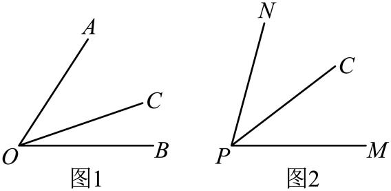
如图2，若∠MPN=75°，PC是∠MPN的平分线：
(1)射线PC______∠MPN的美妙线．（填“是”或“不是”）
(2)如图2，射线PA绕点P从PC位置开始按逆时针方向旋转α度0°<α<37.5°，当旋转的角度α等于多少度时，射线PA是∠MPN的美妙线？
(3)射线PQ绕点P从PM位置开始，以每秒10°的速度按逆时针方向旋转，同时射线PN绕点P以每秒5°的速度按逆时针方向旋转．设旋转的时间为t秒(0<t<15)，请求出当射线PQ是∠MPN的美妙线时t的值．
【答案】(1)是
(2)12.5°
(3)3或5或7.5
【分析】本题考查旋转的性质，奇妙线定义，学生的阅读理解能力及知识的迁移能力．解题的关键是理解“奇妙线”的定义．
（1）利用角平分线的定义可得出∠MPN=2∠NPC=2∠MPC，根据奇妙线定义即可求解；
（2）根据PC是∠MPN的平分线，可列出关于α的一元一次方程，解出即可；
（3）若旋转的时间为t秒(0<t<15)，则∠MPN=75+5t°，∠MPQ=10t°，∠NPQ=75−5t°，分∠NPQ=2∠MPQ，∠MPN=2∠MPQ，∠MPQ=2∠NPQ三种情况，可列出关于t的一元一次方程，解之即可．
【详解】（1）解：∵∠MPN=75°，PC是∠MPN的平分线，
∴∠MPN=2∠NPC=2∠MPC，
∴射线PC是∠MPN的美妙线；
故答案为：是；
（2）∵∠MPN=75°，PC是∠MPN的平分线，
∴∠NPC=∠MPC=12∠MPN=12×75°=37.5°，
根据题意得：37.5°+α=237.5°−α
解得：α=12.5°，
则当旋转的角度α等于12.5°时，射线PA是∠MPN的美妙线；
（3）若旋转的时间为t秒(0<t<15)，则∠MPN=75+5t°，∠MPQ=10t°，
∠NPQ=∠MPN−∠MPQ=75+5t°−10t°=75−5t°，
当∠NPQ=2∠MPQ时，75−5t°=2×10t°，
解得：t=3；
当∠MPN=2∠MPQ时，75+5t°=2×10t°，
解得：t=5；
当∠MPQ=2∠NPQ时，10t°=2×75−5t°，
解得：t=7.5；
则当射线PQ是∠MPN的美妙线时t的值为3或5或7.5．